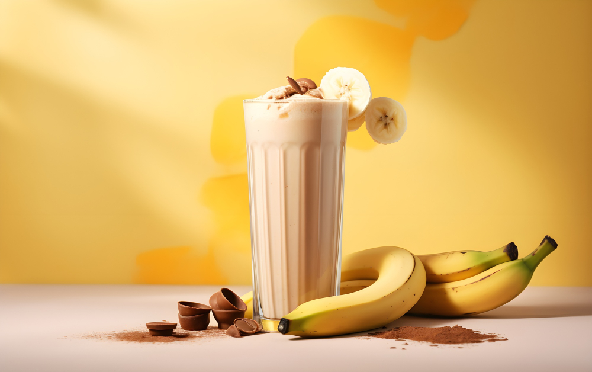

Banana Smoothie
 Image By freepikDescription
This easy peanut butter banana smoothie is both refreshing and delicious. With just a few simple ingredients, you can enjoy a sweet and flavorful treat.
Ingredients
- 2 bananas, broken into chunks
- 2 cups milk
- ½ cup peanut butter
- 2 tablespoons honey , or to taste
- 2 cups ice cubes
Steps
- Gather all ingredients.
- Place bananas, milk, peanut butter, honey, and ice cubes in a blender.
- Blend until smooth, about 30 seconds.
- Enjoy your smoothie!
Sources
Recipe taken from Allrecipes.